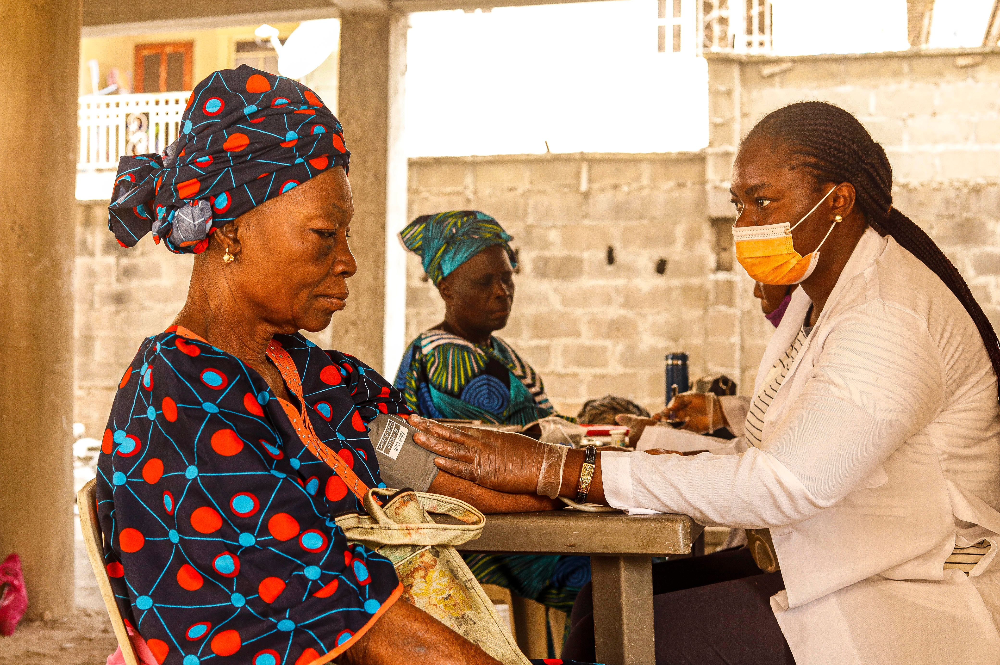

Engineered for clinicians facing connectivity blackouts in lead-lined radiology suites, basement labs, and rural wards. Capture vitals locally, trigger instant clinical flags, and background-sync once reconnected.
Workflow Protocol
Eliminate paper delays, handwritten registers, and backlog transcription errors.
Log patient demographics, vitals, and symptoms. Dictate clinical observations hands-free using on-device voice processing.
The clinical insight engine checks inputs against age-adjusted baseline thresholds, sorting patients into Urgent, Review, and Clear.
Auto-sync pushes queued records when Wi-Fi returns. 1-tap referral sheets generate transfer briefs ready for tertiary hospital handoffs.
Ward Realities
When clinical corridors and isolation units lose wireless signal, data entry cannot come to a standstill.
Care Continuum
Equip every tier of healthcare from community outreach to tertiary intensive care.

Capture vital signs at the bedside, get instant danger sign triage alerts, and work uninterrupted in remote outreach posts.
Review priority queues, update patient charts after rounds, evaluate vital trends, and prepare referral transfers.
Receive structured digital handoffs with vital sign histories, interventions given, and reason for transfer before patient arrival.
Architecture
Every workflow guarantees speed, patient safety, and zero record loss.
Records are committed to local storage on the device. An unexpected device reboot or Wi-Fi drop loses nothing.
Systolic, diastolic, fever, and SpO2 inputs are screened instantly against adult and pediatric parameters right at the bedside.
The sync engine checks connection status periodically. When an active link is detected, pending batches sync automatically.
Dictate observations when hands are occupied with clinical equipment, with automatic offline audio storage fallbacks.
Pre-populate complete transfer summaries with vital trends, treatment administered, and urgency levels for emergency handovers.
In total mobile broadband outages, transmit compressed vital alert summaries via standard cellular SMS messages.
Clinical Verification
Adjust the clinical readings below to see how the system evaluates triage priority instantly in the browser without pinging an external server.
Live Local Assessment
Directives
Standard operating guidance available offline when supervising consultants cannot be reached.
Severe blood pressure escalation rules, pre-eclampsia assessment in pregnancy, and repeat verification steps.
Pediatric febrile parameters, convulsion danger signs, and rapid diagnostic test decision matrices.
Airway positioning, pediatric rapid breathing indicators, and immediate oxygen escalation guidance.
Oral rehydration volume calculation by body weight for acute dehydration, paired with zinc regimens.
Clinical decision algorithms, voice dictation modules, and triage checks execute inside browser memory on the phone or tablet.
Records commit to local browser storage before transmission. Outages cause zero data loss.
All patient intakes, logs, and queue views require authorized clinician sign-in.
Supports English, Nigerian Pidgin, Hausa, Igbo, and Yorùbá with light and dark themes.
Installable as a PWA directly from the browser on any phone, tablet, or bedside terminal.
Questions & Answers
Everything you need to know about operating the platform during infrastructure blackouts.
Yes. Demographics, vitals triage, automated flag alerts, and voice dictations are recorded directly on the device. An active network connection is only needed when uploading records to the cloud database.
Data commits instantly to browser IndexedDB storage on the clinician's device. Each record remains clearly labeled as "Queued" until network connectivity is restored and synchronized.
With Auto-Sync enabled in Settings, the background engine detects the restored connection and flushes queued records to the server automatically. Clinicians can also trigger sync manually via the "Sync now" button.
When mobile data and Wi-Fi networks fail for extended periods, clicking "SMS Sync" compiles critical vital payloads into a compact SMS format to transmit urgent alerts to supervisory hubs via standard 2G cellular lines.
No. The platform provides evidence-based clinical decision support (Guidance v1.0) to flag high-risk vital thresholds and accelerate triage sorting. It supports clinical judgement and does not replace medical consultation.
Sign in to manage patient records, review active triage queues, or begin a new intake.